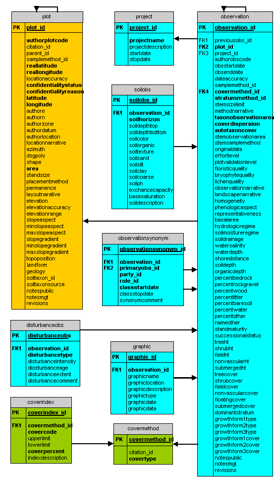

1. An observation is a one-time record of vegetation present in a plot.
2. A plot must have at least one observation and can have several observations, each of which references the parent (earlier) observation via a recursive foreign key to that observation.
3. Some plot attributes are constrained to fall within fixed lists. These are identified in the list of picklists.
4. Some attributes have multiple occurrences for an observation. There can be multiple disturbances, soil horizons, and graphic records. Multiple strata can be observed.
5. Information on methodology can be specified by the observation attributes. Cover method and stratum method are two particularly important methods that need to be specified.
6. Plant taxa are observed during observation events, as discussed in the interpretation section.
7. Observations can be assigned to communities, as discussed in the interpretation section.
